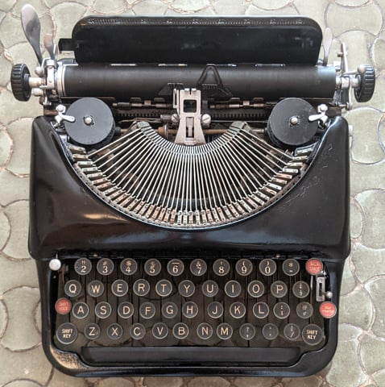
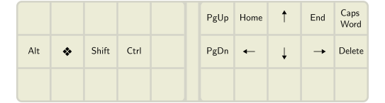

This post is about switching from QWERTY to an alternative keyboard
layout. Why and how do people switch? Which alt layout is best—Dvorak,
Colemak, …?
Which alt keyboard
layout should I learn?
There is no consensus on what is the “best” layout. No layout
is perfect. Layout design is a balancing act of many competing
objectives, and the right balance is subjective.
I highly recommend reading the Keyboard
layouts doc. This is a valuable resource for anyone
interested in alt keyboard layouts. It explains concepts and terminology
for how to compare keyboard layouts, suggestions on how to choose a
layout, and practical tips on how to learn a new layout.
Here are metrics for a sampling of some better known layouts. Lower
is better for same-finger bigrams
(SFBs), LSBs, redirects, and off-home pinky use; higher is better
for rolls. Metrics for English
were computed by Oxey’s
layout playground.
See also this page for an expanded version
of this table.
Colemak-DH is
quite popular in the custom keyboard community. It is a solid,
well-tested option. If you don’t know what to pick, go with
Colemak-DH.
SteveP’s Colemak-DH layout.
Some recent favorites on r/KeyboardLayouts
are APTv3, Canary, Sturdy, and Graphite. Each of these layouts came from
distinct design priorities, which is interesting to see reflected in the
metrics in the table above.
APTv3
has a mention of inspiration from MTGAP and CTGAP. I don’t know beyond
that what design is behind it. Quantitatively, APTv3 is solid across the
metrics.
Canary is
heavily Colemak
inspired. It might be considered an evolution of Colemak to take row
stagger into account, make the Y key more comfortable, and
optimize the metrics, especially in SFBs and redirects.
Sturdy
is particularly remarkable in that it has very high rolls while
attaining relatively low redirects. This is a rare combination, as these
metrics are usually in opposition. It also scores well in SFBs and
reasonably in other metrics. It was created with Oxeylyzer.
Oxey’s Sturdy layout.
Graphite
takes inspiration from Sturdy and MTGAP. It revises Sturdy with a
reduced emphasis on rolls in exchange for lower LSBs and redirects.
Special effort is made for low pinky use and punctation bigrams common
in programming syntax.
✨ Magic Sturdy. If you are daring to consider
something more experimental, I use Ikcelaks’ Magic
Sturdy, a variation of Sturdy. The “magic” is a key whose function
depends on the last pressed key, implemented using the Alternate
Repeat Key. This key is used to remove the top SFBs and type common
n-grams. It’s a magical typing experience!
A★ = OC★ = YD★ =
YE★ = UG★ = Y
I★ = ONL★ = KM★ =
ENTN★ = IONO★ = A
P★ = YQ★ = UENR★ =
LS★ = KT★ = MENT
U★ = EY★ = P⎵★ =
THE.★ = ./#★ = INCLUDE
Ikcelaks’ Magic Sturdy layout plus a few tweaks of my own. ★ is the
magic key.
More magic: Magic
Romak, Nordrassil, and Vylet are a few other
layouts designed with an integrated magic key.
Why do people want to use
alt layouts?
The main motivation for alt layouts is better typing
comfort. Alternatives to QWERTY dramatically reduce awkward
typing motions such as same-finger bigrams
(SFBs), reduce how much your fingers need to move (finger travel) to
accomplish the same typing, and balance the typing workload over the
fingers more evenly.
QWERTY was designed by Christopher Sholes in the early 1870s for the
Sholes and Glidden mechanical typewriter. It’s often said QWERTY was
designed to avoid the typebars from jamming, though it’s
debatable whether that’s historically accurate.

1930s Remington portable typewriter with
QWERTY layout. Photo by Mariochs, distributed under a CC BY-SA
4.0 International license.
What is obvious though is that QWERTY has a lot of SFBs, like
ed, un, rt, ol, much
more than any popular alt layout. Think about typing “loft”
or “unjust.” Those same-finger movements are slow and
awkward to type.
To be fair, QWERTY was basically the first successful layout, a
pioneering solution to a tough problem. It shouldn’t be surprising that
its metrics are far from optimal. At the time it was created, the
activity of typing itself was new.
Should I use an alt layout?
It’s your choice. You don’t have to learn an alt layout.
Switching to an alt layout takes a lot of effort (at least a couple
months of daily practice), and the benefits are not huge. I don’t
mean to be discouraging, just raising some counterpoints:
If your hope is that changing layout will increase your typing
speed, let me point out that speed is a matter of typing practice, not
layout. There are plenty of extremely fast speed typists who use QWERTY.
And the fastest typists (exceeding 300 wpm) don’t use regular keyboards
at all, instead they use stenotype. See also I type XXX wpm –
Is that fast?
If your motivation is typing comfort, consider first correcting
your posture, switching to a split columnar keyboard (these keyboards are awesome!), try DreymaR’s Extend
Layer, or switch to a modal editor like Vim—all of these things are
more impactful and easier to do than learning a new layout.
So why do it? For me, switching to an alt layout is a long-term
investment in my health and comfort. I will type a lot in my life (I
work as a software engineer), so spending several months learning a new
layout is a fair price.
Outside the box
Most layouts are designed so that it could work with two-handed
typing on a standard keyboard. But some layouts go outside the box.
Arguably, these differ enough from standard typing that they are not
just “layouts” but distinct input systems.
Many other thumb key layouts are catalogued and discussed in
Precondition’s post Pressing
E with the thumb. The advantages are gaining a free home row key and
removing conflicts with bigrams involving E. A downside is
that such layouts are not usable (without creativity) on conventional
keyboards. Another potential concern is the extra load on the thumbs—PSA: Thumbs can get overuse
injuries.
One-handed layouts:Ardux is a one-handed
keyboard system for use on 8 to 36 keys. All keys from a full keyboard
are available through chording and layers. Many other one-handed typing
systems have been developed. A well-known older one is Doug Engelbart’s
five-key
keyset (~1965).
How long does it
take to learn an alt layout?
Realistically, expect it to take at least a couple months of
daily typing practice. Switching to a new layout is a large
undertaking.
I have switched layouts a half dozen times. My progression tends to
be 40 wpm after the first month, 50 wpm after the second month, and
80 wpm after the first year. Other people have reported similar
order-of-months experience to learn a new layout. Your mileage may vary.
Rate of progress depends on how similar the new layout is to your
familiar layout (more similar implying quicker to learn), how
consistently and how much you practice, and how much sleep you get (yes,
seriously).
It’s worth it for the comfort, but be patient and approach it as a
long project. Developing muscle memory takes time and consistent
practice.
How to learn an alt layout?
It doesn’t have to be cold turkey. The first couple
weeks are the hardest since your typing will be frustratingly slow. Some
people believe in switching to using the new layout alone “cold turkey”
as the best way to learn. You can do that, but this isn’t necessary. In
the first couple weeks, I’ve found decent progress doing 30 minutes of
practice a day on the new layout, then switching back to my familiar
layout for the rest of the day. Then once getting to a usable 30 wpm or
so, switching the new layout full time is more bearable.
Obligatory warnings
⚠ Ensure that you can type your computer password in the new
layout. Otherwise you might get locked out!
⚠ It is essential that you use the layout’s intended finger
placement, that each key is typed with the intended finger.
Failing to do this effectively changes the layout’s SFBs, likely
dramatically for the worse and ruining the layout. Consider learning a
new layout as an opportunity to brush up on touch typing (Should I
learn how to touch type?).
Pay attention whether the layout is described for “angle
mod” finger placement. By default, standard fingering is assumed as
in the top figure. An angle-modded layout follows the middle or bottom
figure:
Colemak-DH with standard vs. two
variations of angle modded fingering. Note displacement of the lower
row.
⚠ Be careful about rearranging keys in a layout for
the same reason as the previous point. Rearranging keys is likely to
ruin the layout unless you know what you are doing. If you do want to
rearrange keys, use an analyzer tool like Oxey’s
layout playground to check how metrics are affected and read the Keyboard
layouts doc to learn the fundamentals of layout design.
A suggested training
approach
With the warnings out of the way, here is a suggested approach to
learning a layout.
(~5 minutes) First, memorize the position of each letter in
the layout. Get a paper and pen and draw the layout. Draw it again and
again, repeating until you have every letter memorized. Once successful,
hopefully, you are able to close your eyes and visualize the layout in
your mind, a significant first step in acquiring a layout. You can also
save one of your layout drawings as a cheat sheet for later reference,
though hopefully after this exercise you’ll rarely need it.
(2–3 days) Next, begin training your fingers on keybr.com. The keybr.com typing practice site is
excellent for this early stage of learning. It uses an approach of
starting with a handful of common letters and exercises of typing words
with those letters. Once you reach a required proficiency on those
letters, more letters are introduced, one at a time. Practice on keybr
every day for at least 30 minutes. Eventually, you learn all the
letters, and by that point should be able to type in the new layout at
20 wpm, if not more. You are then ready to graduate to other practice
methods.
There are many good typing practice sites. General advice is to
strive for 99% accuracy, try not to sacrifice accuracy for speed, and
try to continue practicing daily. Consistent practice with focus on
accuracy will naturally improve your speed over time.
See what you like from the following practice sites:
MonkeyType is excellent for
typing practice—once configured. I suggest going under settings and set
the “stop on error” mode to “word.” This way, MonkeyType forces you to
correct typing errors before continuing to the next word.
Beware that the default english mode samples from a
vocabulary of only 200 words. This is fine in the early stage for
building up speed on some common words, but for general typing skill
this is pretty useless. You’ll want to advance to a larger vocabulary
like english 5k. See also Gary
Internet’s Typing Guide and the first section of the Keyboard
layouts doc for tips on how to use MonkeyType effectively.
TypingClub is excellent
if you want a guided curriculum, as opposed to how other sites on this
list are open-ended practice tools. TypingClub is free to use with a
paid option to remove ads and access to additional games. The site
guides you starting from the very basics (which you may skip if you
practiced on keybr as described above) to +50 wpm through a sequence of
typing exercises, each requiring steadily higher proficiency to
pass.
Problem Words focuses on
typing accuracy. Whenever a word is mistyped, it is added to your list
of “problem words” and it will appear again in subsequent exercises.
Once you successfully type a problem word several times without typos,
it is removed from the list.
Ngram Type
is a little tool for getting fast at common n-grams and building up
speed.
Entertrained has you pick
a book (among a selection of famous works like Dracula and
Crime and Punishment), then essentially, you type the book as
typing practice. To make this manageable, the each paragraph is
considered its own exercise, after which you may pause and rest before
beginning the next paragraph, and all progress is saved. Entertrained is
my latest favorite typing practice site. It’s more fun than typing
random words.
What about Vim?
If you use an editor with Vim key bindings, pay attention to
the positions of j, k, w, and b. Alt layouts optimized for
English tend to put j and k somewhere awkward,
like a corner pinky key, being rare English letters (ranks 24 and 22 in
Norvig’s data). This is sensible for general typing, but problematic for
Vim, where j and k are used for vertical
navigation. Depending on how you navigate, w and b
may be similarly troubled, with their frequencies in English being
relatively low (ranks 18 and 20).
To make the point, here is a real keylog snippet of me editing C code
in Vim. About half of my keystrokes are commands, not written text:
{ } ko2 c2 ko V(yes_token); yes_token = INV n; jdd wjj>> wkkwkcwYES_START
jjjjddkkpjyykkpjo} k<< wjk} return false; case YES_STOP kjddkkkkp<<..o
jjjJJuww && j<<jdd wjkkA: k<<jdj<<kyyjpwwwwwwwwxjdj<<j<<jddjcwreturn
false wjjjdjkkkdjkko Alternatively, you can do this without the
Deferred Execution API as follows.kkkVkyjpkddostatic uint32_t next_yes;
kk = 0; ko kwwbistruct { } yes = {0, false}; kko uint32_t next_time; kjbbc
In principle, a Vim user should make less jk-spam
through better use of other navigation than I do, like find and til
f t, paragraph motions { }, relative line
jumps, window-relative home / middle / last motions H M L,
and so on (:h
motions.txt).
It is possible to edit your .vimrc key bindings to
navigate using other keys. I wouldn’t recommend this, though. Vim has so
many commands that changing one key binding is likely to overwrite
another, so there is potentially a domino effect of displaced bindings.
Another limitation is there are many other programs besides Vim that use
Vim key bindings (e.g. less, cmus, GMail), but
not all are easy or possible to configure.
How, then, can one use an alt layout with Vim?
There are Vim-friendly alt layouts that play well with
default Vim bindings: If you don’t mind inner column positions,
Colemak (with or
without DH mod) and Gallium are decent.
Engram has jk in
comfortable positions. My Magic Sturdy
flavor modifies Sturdy for comfortable jk
positions.
It’s also often doable to mod a given layout to swap j
into a better position. Since j is a rare letter, swapping
it with punctuation or another rare letter (such as one of
zqxv) tends to have mild impact on the layout metrics. Oxey’s
Layout Playground and Cyanophage’s
Layout Playground are useful to explore mods like this.
Using a navigation layer of arrow keys is another
solution, then it does not matter where hjkl are in the
base layout. Arrow keys are placed in comfortable positions on
a secondary layer, then a layer switch of some kind is used to activate
it. A navigation layer can be implemented on a programmable keyboard or
with a software keyboard remapper like Kanata. Such a layer is
useful outside of Vim as well.

Example navigation layer, based on DreymaR’s Extend
layer. Index fingers rest on Ctrl and
←.
This isn’t the right solution for me. Navigation while editing is so
frequent and interspersed with other normal mode actions that engaging a
layer each time is more finger work than I accept. Nevertheless, it
appears quite a few folks find this to be a satisfying
solution.
If you add a Repeat key, it is less important where
j is positioned (Repeat key in QMK, Repeat key in ZMK,
Repeat
key in Kanata). Then, repeated tapping jjj can be done instead as jrepeatrepeat. If using QMK, you can also add an Alternate
Repeat key for navigating in the reverse direction as well.
What about keycap legends?
You would think that to avoid confusion, changing to an alternative
layout means you also need to rearrange or relabel your keycaps to agree
with the layout. Fortunately, this turns out to be a non-issue in
practice. Surely, you plan to touch type on the new layout? You
should! With proper touch typing, you will never look at the keys,
and keycap legends don’t matter.
If you really must have it, look into “relegendable keycaps.”
Is it really that
hard to arrange 30 keys?
You might wonder why there are so many layouts and why this is not a
solved problem.
A good layout does not result from optimizing one metric in
isolation. The first obvious idea of putting the most frequent letters
in the best positions minimizes only a positional cost and has low
quality results. A good layout comes through ensuring that multiple
metrics are simultaneously reasonable—typically including at least a
positional cost, SFBs, scissors, redirects, and rolls.
Layouts are often created using a layout optimizer such as oxeylyzer or genkey, software that
searches for a layout by optimizing an objective function of such
metrics.
Alternatively or in combination with optimizers, layouts are designed
manually, like fitting pieces of a puzzle, applying strategic patterns
of key arrangements for favorable metrics. See the Keyboard
layouts doc for detailed discussion of such patterns. Oxey’s
Layout Playground and Cyanophage’s
Layout Playground are useful tools for layout design. These are web
apps where you can interactively drag the keys around, and metrics are
recomputed on the fly to show the effect.
Designing a good layout is challenging:
The best balance of multiple metrics is
subjective. Improving one metric will usually regress on
another metric. Finding desirable well-rounded balance is unobvious and
subjective. For instance, some users may be inclined to accept tradeoffs
for reduced pinky usage or index finger usage, especially where RSI is a
factor.
The usual metrics are not great. SFBs, scissors,
redirects, rolls ultimately attempt in a very simplistic way to
anticipate how comfortable/fast/ergonomic the layout is. To faithfully
model these qualities, we arguably need something much more
sophisticated, perhaps a detailed biomechanical model of the
hand.
Optimization is hard and slow (specific to
optimizers). The search space is discrete, so not amenable to
gradient-based techniques. It is large enough that brute-forcing is
infeasible: 30 factorial = 2.65 × 1032 possible
rearrangements of 30 keys. Though as said by Ian Douglas, no good layout
will have T and H on the same column, or other
such egregious SFBs, and this observation may be used to constrain the
search.
Optimizers I’ve looked at use a simple simulated
annealing algorithm or a genetic
algorithm. These methods have no guarantee of finding an optimal
solution, it is possible to get stuck in local optima. Suggested by
Cyanophage, an approach to avoid local optima is to make multiple runs
of greedy depth first search.
By any on these methods, optimization is slow. Run time of multiple
hours is expected, I think. Optimizers are preferably implemented
efficiently for good performance, e.g. leveraging multithreading and in
a language like C++ or Rust. These requirements make optimizers
nontrivial to develop.
The size and quality of the text corpus is a
factor. A larger text corpus (the text on which metrics are
evaluated) is generally better for good statistics, but increases
computation cost. Also, corpora used in practice usually don’t include
hotkey, Vim normal mode keybindings, etc. Since they don’t relate
directly to written characters, it is harder to collect data on
that.
Most significantly, it is labor intensive to manually
assess a layout in real world use. Once a layout is designed,
the true test is how it feels when really using it. But learning a new
layout is a
nontrivial effort. For me, it takes at least a few weeks of practice
with a new layout to get feel for it in a qualitative sense.


 O-X-E-Y/oxeylyzer layout analyzer
O-X-E-Y/oxeylyzer layout analyzer